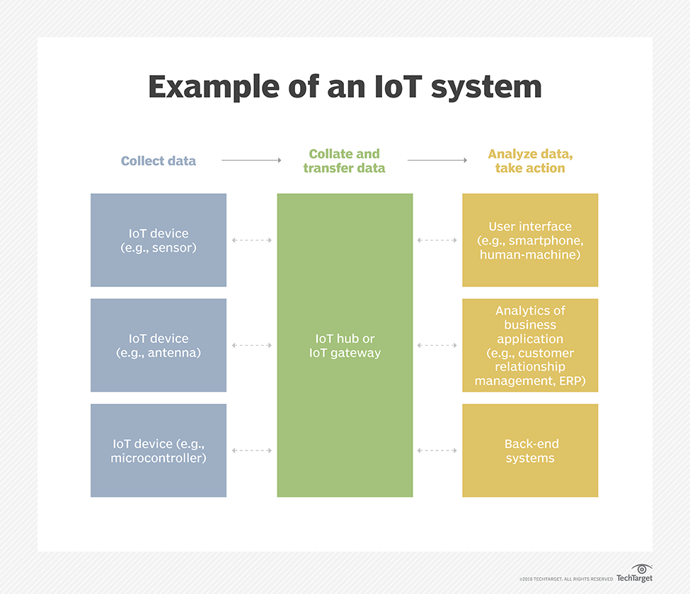

internt of things Is a collection of interrelated computing devices , mechanical and digital machines , objects , animals or individuals that have uniqueidentifiers (UIDs) and the ability to transmit data over a network without needing human-to - human or computer-to - computer interaction.
PAGES:
in this site we will talk briefly about IoT
How IoT Works:
An IoT ecosystem consists of web-enabled smart devices that use embedded systems, such as processors,sensors and communication hardware, to capture, transmit and act on data they acquire from their environment.IoT devices share the sensor data they are collecting by connecting to an IoT gateway orother edge device where data is either sent to the cloud for analysis or analyzation locally.
Such systems often interact with other similar devices, and operate on the input they obtain from each other. Most of the work is done without human intervention by the devices, although people can interact with the devices — for example, set them up, give them instructions or access the data.
and this image illustrates example of IoT system